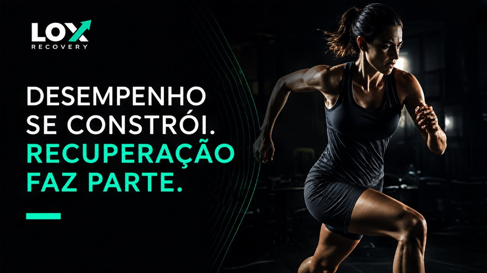
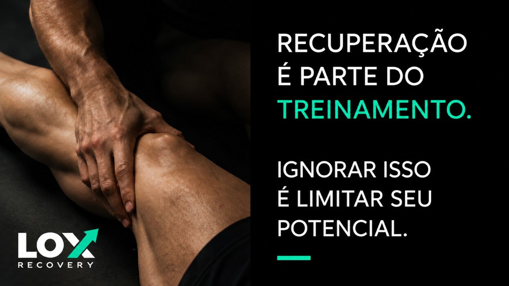
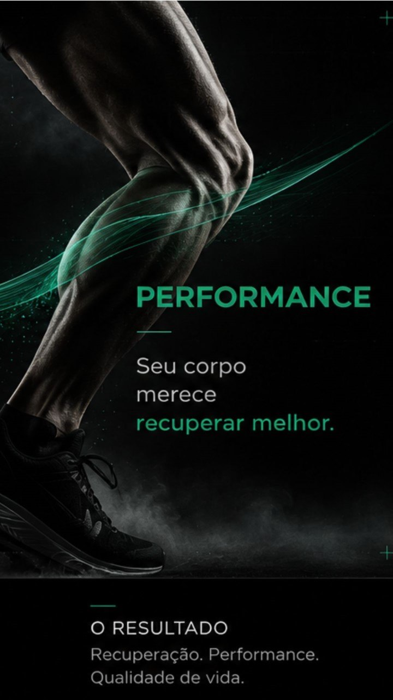

Performance se constrói.
A recuperação faz parte.
Um método de recuperação esportiva para atletas e pessoas que vivem em movimento — avaliação, terapia manual e acompanhamento em um único processo.
O que significa recuperar?
Acreditamos que recuperação não deve ser vista como uma pausa no treinamento. Ela faz parte do treinamento.
Trabalhamos para reduzir o impacto das cargas de treino, melhorar a recuperação muscular, preservar a qualidade do movimento e ajudar cada atleta a manter a consistência da sua preparação. Treinar melhor depende também de recuperar melhor.

Não listamos massagens. Explicamos recuperação.
Um atleta não procura apenas alívio para uma dor. Ele procura alguém que compreenda a exigência física do seu esporte e o ajude a continuar treinando com segurança e consistência.
Avaliação
Compreendemos histórico esportivo, rotina de treinos, desconfortos e objetivos antes de qualquer atendimento.
Tratamento
Terapia manual, liberação miofascial, mobilizações e massagem esportiva conforme a estratégia definida.
Acompanhamento
A recuperação não termina na maca. Orientamos cuidados e frequência para manter os resultados na temporada.
Um processo, não uma sessão isolada
Evolução
Avaliação inicial para entender o corpo, a carga de treino e os objetivos do atleta.
Tratamento
Definição da estratégia de recuperação e aplicação das técnicas mais indicadas.
Seguimento
Acompanhamento contínuo para manter os resultados ao longo da temporada.

Resultados que sustentam a performance
- Redução da sensação de fadiga muscular
- Melhora da mobilidade e diminuição da rigidez
- Maior regularidade nos treinamentos
- Prevenção de sobrecargas por excesso de treino
Observação: os resultados variam conforme a condição individual, a carga de treino e a continuidade do acompanhamento.
Escolha a estratégia certa para o seu momento
Massagem Terapêutica
60 min · Alívio de dores e tensões pontuais.
Massagem Desportiva
90 min · Recuperação entre treinos intensos.
LOX Recovery Performance
120 min · Avaliação, tratamento e acompanhamento.
Fale com a equipe LOX e descubra a melhor estratégia de recuperação
Avaliação inicial gratuita mediante agendamento.